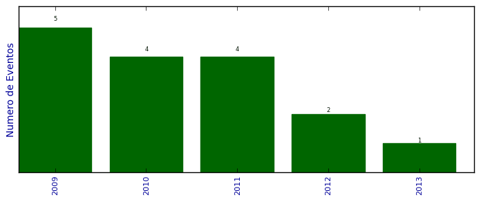

Total de participação em eventos

Número total de itens: 16
2013
| 1. | 14º Fórum Internacional do Software Livre. 2013. (Congresso). |
2012
| 1. | 13º Fórum Internacional do Software Livre. 2012. (Congresso). |
| 2. | Semâna Acadêmica da Computação - FAMES. Curso Básico de Django. 2012. (Congresso). |
2011
| 1. | 12º Fórum Internacional do Software Livre. 12º Fórum Internacional do Software Livre. 2011. (Congresso). |
| 2. | Google Developer Day. 2011. (Congresso). |
| 3. | PythonBrasil[7]. How to code like the killer rabbit of Caerbannog. 2011. (Congresso). |
| 4. | VIII SEMANA ACADÊMICA DA CIÊNCIA DA COMPUTAÇÃO - 2011. Minicurso Básico de Python. 2011. (Congresso). |
2010
| 1. | Fórum Internacional do Software Livre. Bogosort. 2010. (Congresso). |
| 2. | PythonBrasil[6].Como não programar em Python. 2010. (Seminário). |
| 3. | Semana do Técnico em Informática do Colégio Politécnico da UFSM.Introdução ao Python. 2010. (Oficina). |
| 4. | Simpósio de Informática da Região Centro.Bem vindo ao Python. 2010. (Oficina). |
2009
| 1. | 3ª Mostra de Projetos de Pesquisa e Extensão dos Cursos de Ciência da Computação e Sistemas de Informação da Unifra.Um Gerenciador para Redes Wireless Open Source com Localização Física de Dispositivos. 2009. (Simpósio). |
| 2. | Fórum Internacional do Software Livre. O Software Livre no Mundo do MicroBlogging. 2009. (Congresso). |
| 3. | Latinoware 2009. Welcome to the Django. 2009. (Congresso). |
| 4. | PythonBrasil[5]. Controlando seu Lego NXT com NXT-Python. 2009. (Congresso). |
| 5. | Simpósio de Informática da Região Centro.Geolocalização com o Google Maps e Redes Sem Fio. 2009. (Simpósio). |
(*) Relatório criado com produções desde 2009 até HOJE
Data de processamento: 11/04/2014 18:10:53